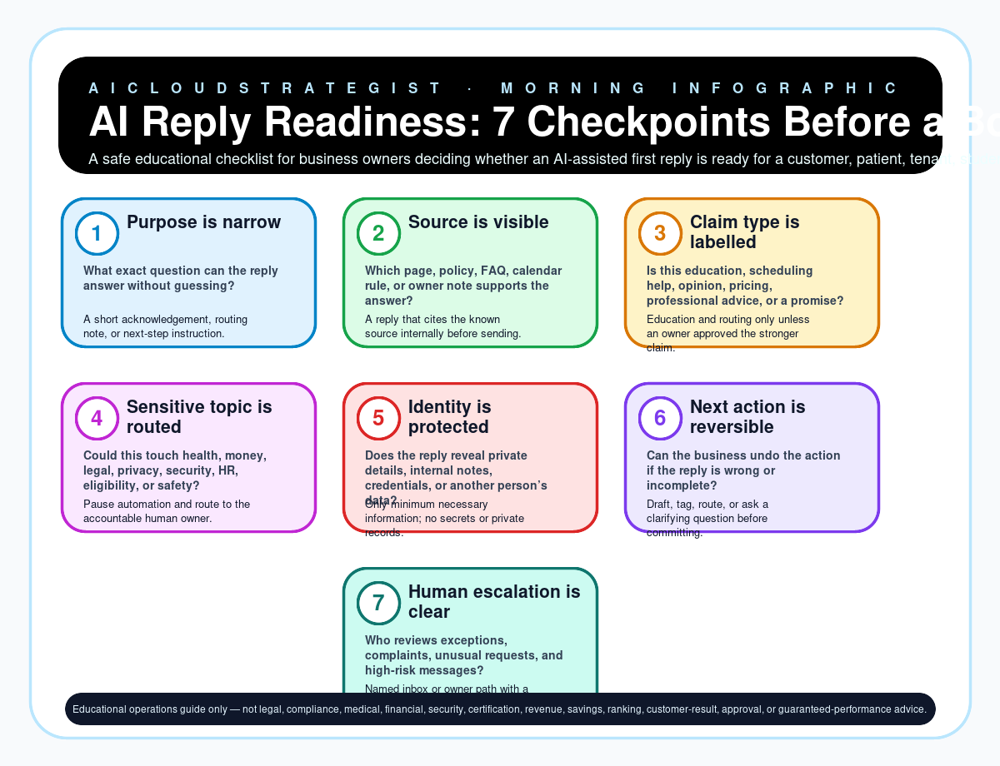

Morning publication · safe automation
AI Reply Readiness: 7 Checkpoints Before a Bot Answers
A safe educational checklist for business owners deciding whether an AI-assisted first reply is ready for a customer, patient, tenant, student, or lead.

Seven readiness checkpoints
| Step | Checkpoint | Owner question | Safe output |
|---|---|---|---|
| 1 | Purpose is narrow | What exact question can the reply answer without guessing? | A short acknowledgement, routing note, or next-step instruction. |
| 2 | Source is visible | Which page, policy, FAQ, calendar rule, or owner note supports the answer? | A reply that cites the known source internally before sending. |
| 3 | Claim type is labelled | Is this education, scheduling help, opinion, pricing, professional advice, or a promise? | Education and routing only unless an owner approved the stronger claim. |
| 4 | Sensitive topic is routed | Could this touch health, money, legal, privacy, security, HR, eligibility, or safety? | Pause automation and route to the accountable human owner. |
| 5 | Identity is protected | Does the reply reveal private details, internal notes, credentials, or another person’s data? | Only minimum necessary information; no secrets or private records. |
| 6 | Next action is reversible | Can the business undo the action if the reply is wrong or incomplete? | Draft, tag, route, or ask a clarifying question before committing. |
| 7 | Human escalation is clear | Who reviews exceptions, complaints, unusual requests, and high-risk messages? | Named inbox or owner path with a stop rule. |
Truth boundary
Educational operations guide only — not legal, compliance, medical, financial, security, certification, revenue, savings, ranking, customer-result, approval, or guaranteed-performance advice.